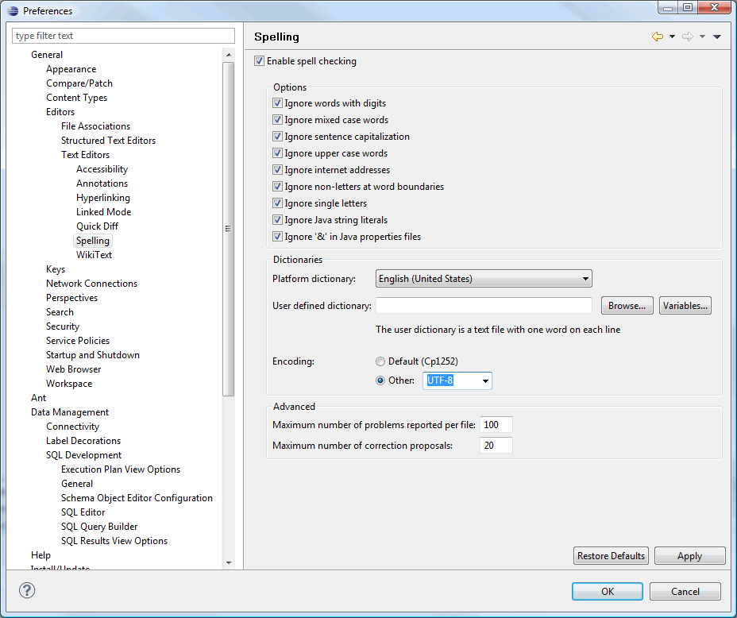
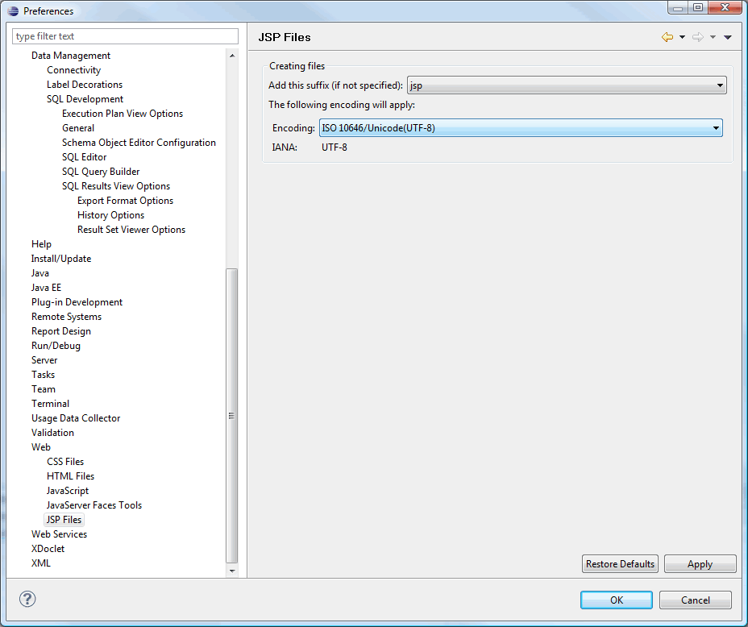
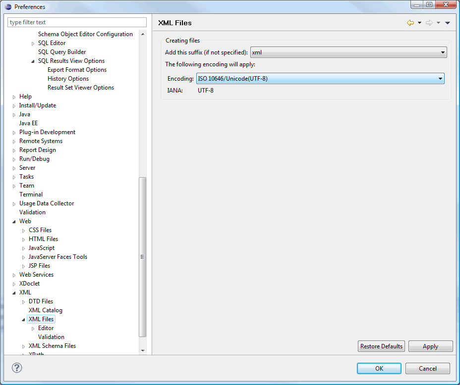
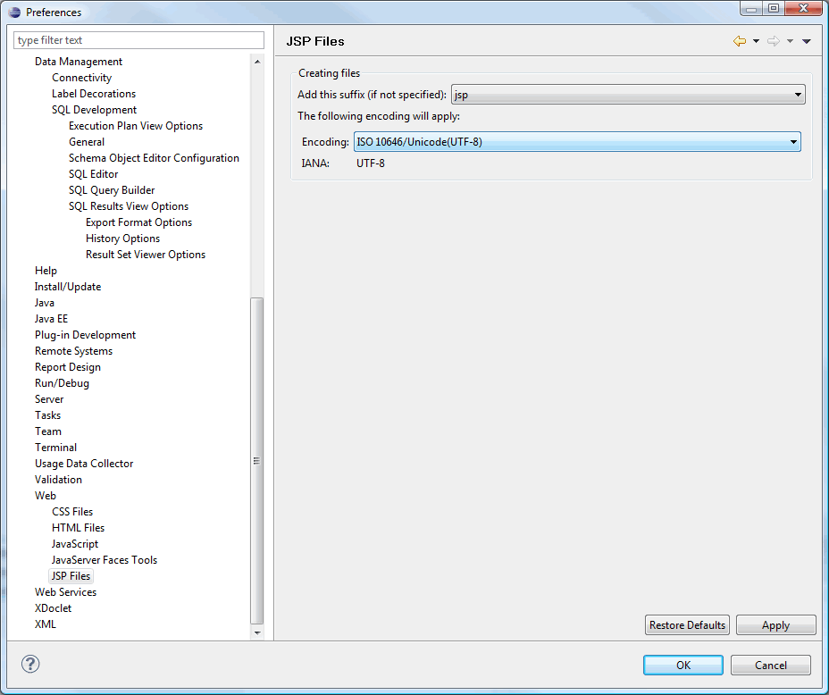
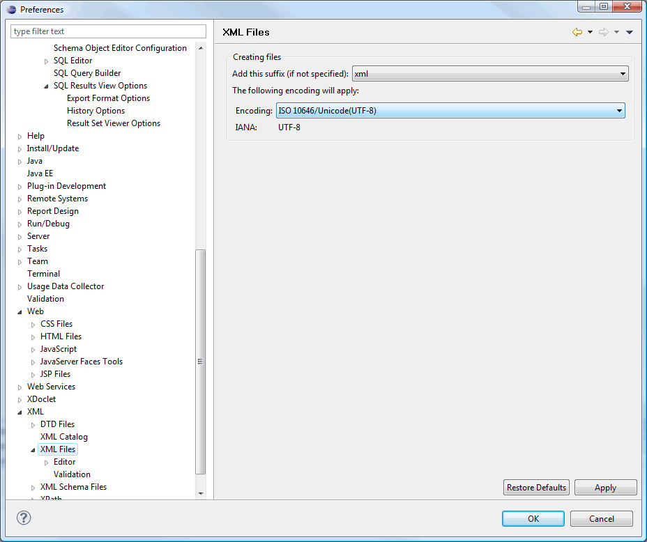
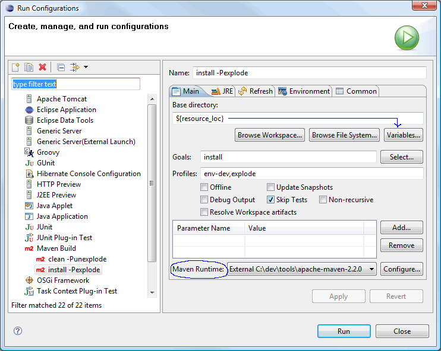
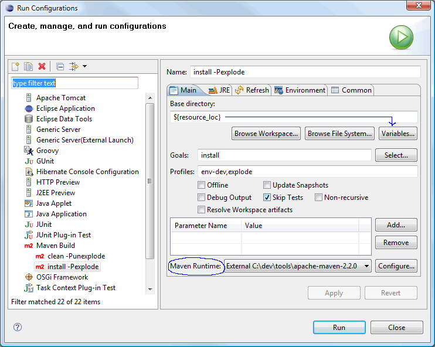

Eclipse and JBoss Tools
Denne tutorialen er ikke helt ferdig. Må beskrive stegene som er nødvendige for å benytte JBoss Tools. Screenshots må endres siden jeg har fjernet JAR pom'en. Vise steps for å opprette en entitetklasse med autogenerert CRUD UI-grensesnitt. Vise steps for reverse engeneering med autogenerert UI.
This tutorial explains how to use the Eclipse IDE and JBoss Tools for development.
Shortcuts
The shortcuts are listed here so we don't have to type the tedious file paths over and over again in this document.
${JBOSS_HOME}- refers to Jboss installation folder, e.g. C:\servers\jboss-4.2.3.GA${JBOSS_CONFIG}- refers to the configuration directory e.g. C:\servers\jboss-4.2.3.GA\default${JBOSS_DEPLOY}- refers to the JBoss deploy folder, e.g. C:\servers\jboss-4.2.3.GA\default\deploy${PROJECT}- the project root folder, i.e. seam-maven-refimpl${SEAM_REFIMPL}- the folder where the reference project, i.e. seam-refimpl, is installed on your computer${SEAM_TUTORIAL}- the folder where the tutorial project, i.e. seam-tutorial, is installed on your computer
Download and install software:
- Eclipse Ganymede 3.4 (with WTP installed)
- Maven 2.0.9 or later.
Note: Do not use Maven 2.1.0, it has a serious bug, see the${PROJECT}/doc/maven-2.1.0-bugfolder for an explanation.
A Maven-2.2.0 release candidate can be found here. - Eclipse Maven plugin
- SubClipse-1.6.x, Team Provider plug-in providing support for Subversion within the Eclipse IDE
- JBoss Seam 2.1
- JBoss Tools 3
- Jboss 4.2.3.GA Application Server
- TestNG
Configure Eclipse
-
Create an empty workspace folder, e.g. C:/ide/workspaces
Note: Do not use your project folder, ${SEAM_TUTORIAL}, as a workspace folder. -
Start Eclipse and select to the newly created workspace folder.

- Import code styles - To be done!
-
Set all editors to UTF-8



 




-
Install Eclipse Maven plugin and configure Eclipse
to use an external Maven installation.
According to this blog there is a problem when running embedded Maven from Eclipse, so we need to configure Eclipse to use an external Maven installation.
Select Window>Preferences from the menu and edit details as outlined in image below.
-
Create a WTP server reference:
Install the Jboss 4.2.3.GA Application Server, install JBoss Tools 3. The JBoss Seam documentation explains these steps in detail. The screenshots below outlines the steps needed to configure a WTP server reference for JBoss 4.2.3.
In Preferences, navigate to Server>Runtime Environments. Click Add.... Browse to the folder named JBoss, a division of Red Hat and select JBoss 4.2 Runtime. Click Next, name the server runtime, e.g. JBoss 4.2.3 Runtime, and point the
Home Directory to the folder where you installed the server. Select the
Default configuration.
Click Next, name the server runtime, e.g. JBoss 4.2.3 Runtime, and point the
Home Directory to the folder where you installed the server. Select the
Default configuration.
 Click Next, name the server, e.g. JBoss 4.2.3 Server, and click
Finish.
Click Next, name the server, e.g. JBoss 4.2.3 Server, and click
Finish.
 Exit Preferences and switch to the JBoss perspective.
Exit Preferences and switch to the JBoss perspective.
 Doubleclick on the JBoss 4.2.3 Server to open the JBoss 4.2.3 Server Overview tab.
Doubleclick on the JBoss 4.2.3 Server to open the JBoss 4.2.3 Server Overview tab.
 Verify that the Use the JBoss deploy folder radio button is checked.
Verify that the Use the JBoss deploy folder radio button is checked.
 The console output should look something like the screeshot below.
The console output should look something like the screeshot below.

-
Define a data source:

 Open the Database Development perspective. In Data Source Explorer
rightclick Databases folder and select New...
Open the Database Development perspective. In Data Source Explorer
rightclick Databases folder and select New...


-
Configure JBoss Tools
Unpack JBoss Seam 2.1 to a folder of your choice, e.g.C:/ide/libs/jboss-seam-2.1.1.GA. Follow the screenshots.

Import a Mavenized Seam Project Into Eclipse
To import a mavenized Seam project to Eclipse (i.e. a project that is already installed on your computer), follow these steps:
-
Use the
seam-refimplproject as a template to set up the project. - Switch to developmentmode
-
Copy
${SEAM_TUTORIAL}/config/profiles/profiles.xmlto${SEAM_TUTORIAL} -
Navigate to the ${SEAM_TUTORIAL} folder using a command shell and execute maven commands:
mvn clean -Punexplode
mvn install -Pexplode (remember to point the server to the correct deploy folder inprofiles.xml)
mvn eclipse:m2eclipse
The last Maven command will generate the Eclipse.projectand.classpathfiles that now makes the project a valid Eclipse project.
Note: Do not use theeclipse:eclipsecommand, it does not work properly when m2eclipse is installed. -
Import project:


-
Modify Maven properties for parent project.

The sub modules.
-
Modify Run Configurations:
According to this blog there is a problem with runningmvn installfrom eclipse. Read the blog and follow screenshots here to fix the problem. 


-
Start server:
 A successful deploy should look like this in the Console log:
A successful deploy should look like this in the Console log:

- Open a browser and enter http://localhost:8080/seam-tutorial